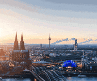

Compre sua Passagem Aqui
Destino para:
Cologne
A cidade é também um grande centro cultural e turístico da Alemanha, contando com cerca de 30 museus, entre eles a destacar o Museum Ludwig (Arte moderna e contemporánea), o Wallraf-Richartz-Museum (Arte do medieval até o século XIX) e o Römisch-Germanisches Museum (Artesanato da época romana).